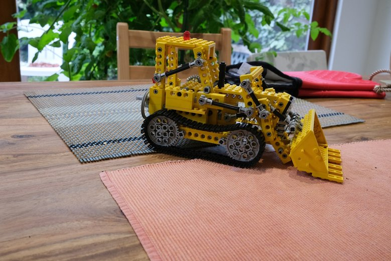
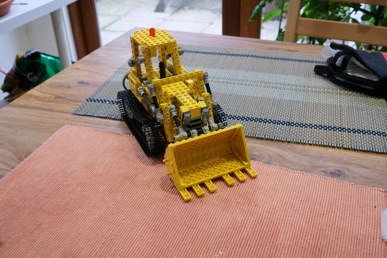
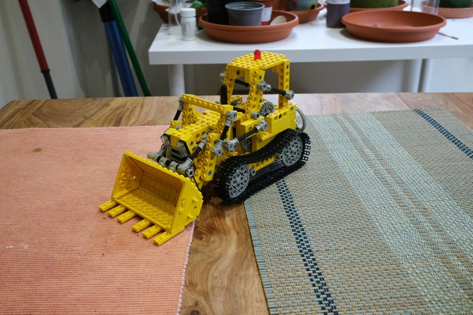
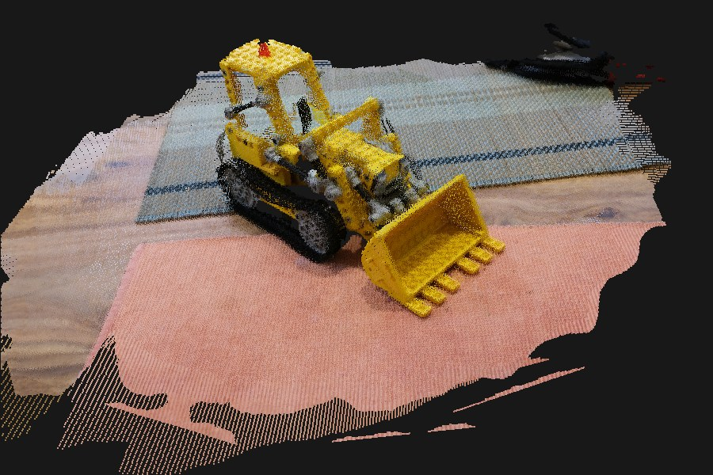

Map a room with a robot car and a chat API
Turns photos into a 3D model and a "where to go next" map with VGGT. It hides behind an OpenAI-compatible endpoint, so it runs next to your vLLM models behind the same router, key and URL.




The idea
A LEGO®-compatible car driven by brickremote gets a small camera. It has no wheel sensors and no map, but it can stop and take a photo. A GPU far away works out the rest:
- Stop and look. The car takes a few photos, turning a little between them.
- Send
step. The mapper places every photo in 3D and finds the floor, walls and unexplored edges. - Decide. A vision-language model sees the photo and the top-down map, and picks a move.
- Drive and repeat. When nothing is left to explore,
finishbuilds the whole room.
API
It is a normal chat completion. The photos are image_url parts (base64 data URLs),
the text is a command, and the reply's content is JSON.
| Command | What it does |
|---|---|
step session=hall camera_height_cm=9 | Adds the photos and answers with pose, frontiers, nearest obstacle ahead and a top-down map |
finish session=hall | Rebuilds from all photos (up to 96) and keeps a coloured point cloud (PLY) |
download session=hall part=0 | The PLY in 3 MB base64 pieces, small enough for any router |
status session=hall | Photos and files of a session |
A step answer:
{"session": "hall", "frames": 12,
"pose": {"x_cm": 44.0, "z_cm": 35.0, "heading_deg": 77.4},
"frontiers": [{"angle": 20.9, "dist_cm": 45.2, "size_cells": 12}],
"obstacle_ahead_cm": 29.5, "explored_done": false,
"map_png": "iVBORw0KGgo…"}Units: angles are relative to where the camera looks now, and positive means left. Positions are in centimetres from the first photo.
The map: map_png shows the floor in white, obstacles in black,
unknown parts in grey, frontiers in orange, and the path in blue.
From Python, with the official client:
from openai import OpenAI
import base64
client = OpenAI(base_url="https://api.blablador.fz-juelich.de/v1", api_key="…")
photo = base64.b64encode(open("look.jpg", "rb").read()).decode()
reply = client.chat.completions.create(
model="alias-visual-geometry",
messages=[{"role": "user", "content": [
{"type": "text", "text": "step session=hall camera_height_cm=9"},
{"type": "image_url", "image_url": {"url": f"data:image/jpeg;base64,{photo}"}},
]}],
)
print(reply.choices[0].message.content)How the map is made
VGGT places all photos in one 3D frame, but it doesn't know how big anything is.
- Scale. The camera sits at a known height on the car, so the mapper finds the floor, the densest flat layer below the cameras, and that height turns VGGT units into centimetres.
- Grid. Points on the floor are free space. Points between 4 cm and a little above the camera are obstacles. Everything else is unknown.
- Frontiers. Free cells at the edge of the unknown are grouped by direction.
Camera angle: tilt the camera slightly down. Without a visible floor there is no scale.
Speed: on an RTX 3090, a step takes 1–2 seconds, and a final model from 96 photos takes about 20 seconds and 13 GB of GPU memory.
Run it
git clone https://github.com/surak/depth-map-through-vllm-router
cd depth-map-through-vllm-router
uv venv -p 3.12 .venv
uv pip install -p .venv/bin/python torch==2.5.1 torchvision==0.20.1 \
--index-url https://download.pytorch.org/whl/cu124
uv pip install -p .venv/bin/python -e '.[model,test]'
hf download facebook/VGGT-1B --local-dir models/VGGT-1B
VLLM_API_KEY=secret .venv/bin/python -m mapper.server --model models/VGGT-1B --port 8030It answers /health, /v1/models, /metrics and
/v1/chat/completions, with or without streaming. That's enough for routers that
expect a vLLM backend. The repository includes a Slurm launcher that registers it with a synapse router.